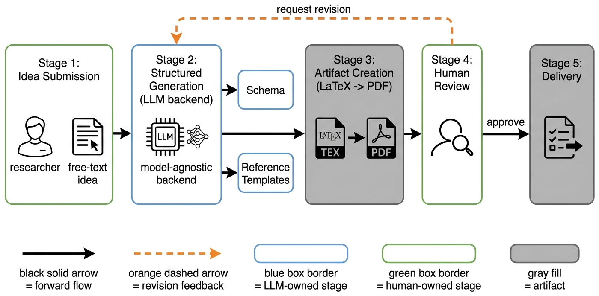
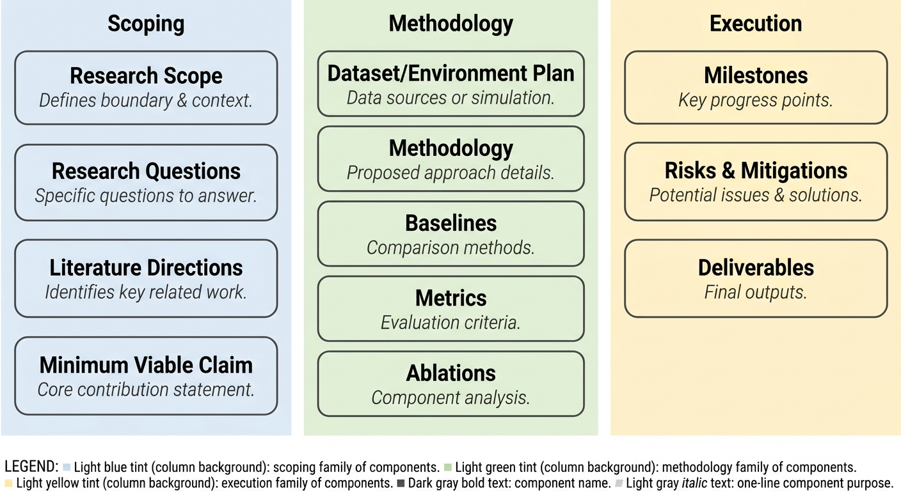
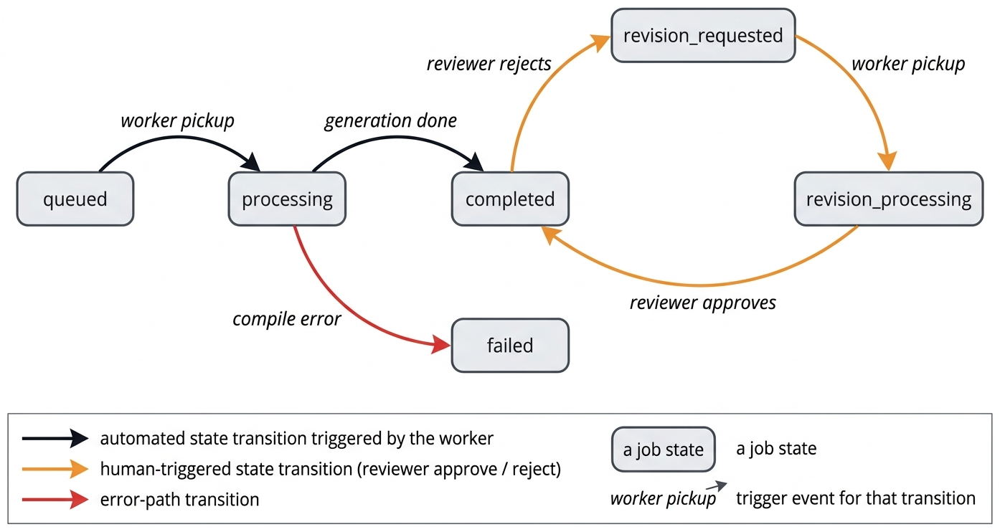
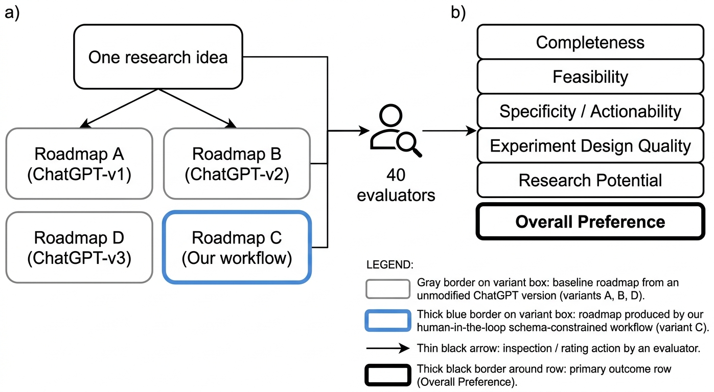
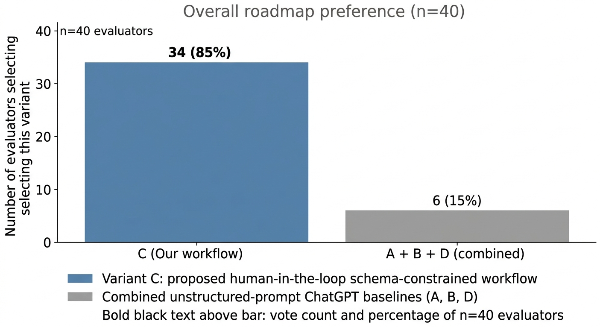

A schema-constrained, human-reviewed LLM workflow turns vague research ideas into executable roadmaps that 34 of 40 evaluators preferred.
Early-stage research projects often fail before any experiment is run, because the idea is too broad, the baselines are missing, or the scope is overclaimed. We pair structured LLM generation with an explicit human review-and-revision step, and report a blind preference study against three unstructured ChatGPT baselines.
01 Abstract
Early-stage research often begins with vague ideas that are not yet executable. Converting a broad interest into a concrete project requires research questions, literature directions, datasets, baselines, evaluation metrics, ablations, milestones, risks, and a realistic contribution claim. Large language models can assist with this planning stage, but unstructured prompting tends to produce roadmaps that are fluent yet generic, hard to verify, or poorly scoped.
We present a human-in-the-loop LLM workflow for research roadmap curation. Given a raw research idea, the workflow generates a structured roadmap artifact that is reviewed, revised, and approved by a human reviewer, who may be the researcher themselves, a mentor, an instructor, a collaborator, or a domain expert. The workflow is model-agnostic; our prototype conditions an LLM backend on reference templates, optionally retrieves relevant literature, emits LaTeX, compiles a PDF, and exposes the result for review through an asynchronous job queue.
We evaluate the workflow with a blind human preference study in which 40 evaluators rated four anonymized roadmap variants for the same idea on completeness, feasibility, specificity, experiment design, and research potential. 34 of 40 evaluators (85%) selected the roadmap produced by our workflow as the one they would adopt, against 6 combined for the three unstructured ChatGPT baselines.
02 Contributions
A workflow framing
Research-roadmap generation is treated as a human-in-the-loop workflow, not a one-shot generation task. The human stays in the loop after generation, when quality judgments are required.
A twelve-component schema
Early-stage research planning is decomposed into scoping, methodology, and execution components: questions, datasets, baselines, metrics, ablations, milestones, risks, and a minimum viable claim.
A blind preference protocol
Four anonymized roadmap variants for the same idea are rated by human evaluators across five quality dimensions, with one overall preference vote as the primary outcome.
03 Method
The workflow has five stages: idea submission, structured generation, artifact creation, human review, and revision-or-delivery. An LLM backend generates a roadmap conditioned on a fixed schema and reference templates, the roadmap is compiled to a reviewable PDF artifact, and a human reviewer either approves the roadmap or routes it back through the revision loop.

Schema-constrained generation
The LLM is constrained to populate a fixed twelve-component checklist organized into scoping, methodology, and execution families, so quality stops depending on surface fluency.
Asynchronous job lifecycle
Each request is a typed job with six states. The dedicated revision_requested state, separate from processing, makes the human review point a first-class concept rather than a chat turn.
Model-agnostic backend
The backend can be any model or agent that supports structured generation: API-based models, coding agents, or local models. The contribution is not tied to a specific provider.


completed → revision_requested → revision_processing → completed is the explicit human-in-the-loop hook that distinguishes the workflow from a one-shot chat interaction.04 Results


The 34/40 preference is a measurement of evaluator-perceived roadmap quality at generation time, not of downstream project success. The result is consistent with the hypothesis that schema-constrained generation paired with human review produces more usable first-pass research plans than one-shot prompting, but it does not establish that students who follow Variant C produce stronger final papers, finish milestones faster, or require fewer mentor interventions. The single-idea design and the bootcamp-skewed evaluator cohort are explicitly acknowledged as the two most consequential limitations.
05 Where this fits
Not autonomous science
The LLM is positioned as a planning assistant. The human keeps responsibility for feasibility, novelty calibration, and scientific correctness. The workflow does not claim that an LLM can determine scientific truth.
Beyond one-shot prompting
Prompting strategies (chain-of-thought, self-consistency, tree-of-thoughts) improve reliability on reasoning tasks. Our schema is a coarser instance of structured generation applied to research planning, not syntax.
Existing planning artifacts
Mentor checklists, NeurIPS reproducibility programs, and project-management templates already encode many of the same components. Our contribution is binding the schema to a generation backend with an explicit revision loop.
06 Where to go next
Read the paper →
9-page ICML-formatted PDF with the full schema, protocol, and limitations.
See the code →
Public GitHub repository with the LaTeX source, figures, and audit log.
Audit trail →
Per-stage timestamps and decisions for every step of the drafting pipeline.
Cite →
BibTeX entry below; copy-to-clipboard button on the right of the block.
07 Cite
@misc{joshi2026roadmap,
title = {A Human-in-the-Loop LLM Workflow for Research Roadmap Curation},
author = {Joshi, Prathamesh and Abraar and Dwivedi, Naman and Dandekar, Raj and Dandekar, Rajat and Dandekar, Sreedath},
year = {2026},
url = {https://github.com/Vizuara-AI-Lab/paper-human-in-the-loop-llm-research-roadmap-curation}
}